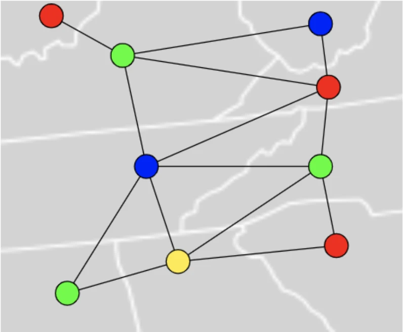

When two WiFi access points broadcast on the same frequency and their coverage areas overlap, they contend for airtime and throughput drops. The channel assignment problem asks: given a set of APs with known positions and coverage radii, assign each AP a channel from a finite pool such that no two overlapping APs share a channel. This is vertex coloring on the interference graph. Deconflict builds that graph from a floorplan, solves it with several coloring algorithms, and renders the signal field as a heatmap so you can see both the coverage and the conflicts.
The interference graph
The interference graph \(G = (V, E)\) has one vertex per AP. Two vertices share an edge if the corresponding APs can interfere: their 3D Euclidean distance is less than the sum of their coverage radii. For APs on the same floor, distance is planar. For APs on different floors, the vertical offset (sum of ceiling heights and slab thicknesses between them) enters as a third coordinate, so \(d = \sqrt{\Delta x^2 + \Delta y^2 + \Delta z^2}\). Each edge carries a weight representing the degree of overlap:
\[\operatorname{overlap}(u, v) = \min\!\left(1,\; \frac{r_u + r_v - d(u,v)}{\min(r_u, r_v)}\right)\]This ranges from 0 (circles barely touching) to 1 (one circle fully contained in the other). Cross-floor edges are further attenuated by floor slab loss: the overlap is scaled by \(10^{-A/10}\) where \(A\) is the cumulative dB attenuation through intervening slabs. Edges with effective coupling below 1% are pruned, which keeps the graph sparse without discarding meaningful interference.
Each frequency band (2.4 GHz, 5 GHz, 6 GHz) produces an independent subgraph, since signals on different bands do not interfere. The solver colors each subgraph separately with its own channel pool, then merges the assignments.

{kind=link}
Vertex coloring
Given a graph \(G\) and a set of \(k\) colors (channels), a proper \(k\)-coloring assigns a color to each vertex such that no two adjacent vertices share a color. The chromatic number \(\chi(G)\) is the smallest \(k\) for which a proper coloring exists. Finding \(\chi(G)\) is NP-hard in general, so the app uses heuristic algorithms that find good colorings quickly, alongside an exact solver that finds \(\chi(G)\) when the graph is small enough.
The primary algorithm is DSatur (Degree of Saturation), introduced by Brelaz in 1979. It maintains for each uncolored vertex \(v\) a saturation count \(\operatorname{sat}(v) = |\{c : \exists\, u \in N(v),\; \operatorname{color}(u) = c\}|\), the number of distinct colors already assigned to neighbors of \(v\). At each step, the algorithm selects the uncolored vertex with the highest saturation (breaking ties by structural degree, then by index for determinism), and assigns it the lowest-numbered channel that does not conflict with any neighbor. This greedy strategy colors the most constrained vertices first, which tends to use fewer colors than naive ordering. DSatur produces optimal colorings on bipartite graphs and empirically finds near-optimal solutions on the sparse, near-planar graphs that arise in WiFi planning.
When the channel pool is exhausted and a vertex has no conflict-free option, the solver falls back to the channel that minimizes the sum of overlap weights with same-colored neighbors. This graceful degradation means the algorithm always produces an assignment, even when \(\chi(G)\) exceeds the available channels. The total co-channel contention is minimized rather than treated as a hard failure.
Three additional algorithms are available for comparison. Welsh-Powell sorts vertices by degree (descending) and colors greedily, which gives an upper bound of \(\Delta + 1\) colors where \(\Delta\) is the maximum degree. A plain greedy algorithm colors vertices in input order. A backtracking solver with arc consistency and MRV (Minimum Remaining Values) branching finds the exact chromatic number by trying \(k = 1, 2, \ldots\) up to the greedy baseline, pruning the search with domain reduction. It times out at 5 seconds, returning the best solution found.

.svg){kind=link}
Signal propagation model
The heatmap needs a signal strength estimate at every point on the floor. The propagation model combines free-space path loss with material-specific wall attenuation.
Signal power at distance \(d\) from an AP with coverage radius \(r\) follows an inverse quartic model:
\[S(d) = \frac{1}{1 + \left(\frac{d}{r}\right)^4}\]The quartic exponent (path loss exponent \(n = 4\)) reflects empirical indoor propagation, which decays faster than free-space inverse-square due to multipath and absorption. The coverage radius \(r\) is derived from the link budget:
\[r = 10^{\,(P_{\mathrm{tx}} - \mathrm{PL}_0 - P_{\mathrm{rx}}) \,/\, (10n)}\]where \(P_{\mathrm{tx}}\) is transmit power, \(\mathrm{PL}_0\) is reference path loss at 1 meter (40 dB at 2.4 GHz, 47 dB at 5 GHz, 49 dB at 6 GHz per ITU-R P.1238), and \(P_{\mathrm{rx}} = -85\) dBm is receiver sensitivity.
Wall attenuation is computed by DDA ray marching from the AP to the evaluation point. The algorithm steps through a discrete grid of wall pixels, accumulating dB loss at each wall crossing. Six wall materials have distinct attenuation rates \(\alpha_m\) (dB per meter of thickness): drywall 25, glass 17, wood 33, brick 35, concrete 60, metal 120. The total wall loss is a line integral of material attenuation along the ray path, discretized as a Riemann sum over grid steps:
\[L_{\mathrm{wall}} = \sum_{i} \alpha_{m(i)} \cdot \Delta s_i\]where \(m(i)\) is the material at step \(i\) and \(\Delta s_i\) is the step length in meters. The received signal combines path loss and wall attenuation:
\[S_{\mathrm{received}}(d) = S(d) \cdot 10^{-L_{\mathrm{wall}} / 20}\]For cross-floor APs, the 3D distance enters the path loss calculation, and each intervening floor slab contributes additional attenuation (8-35 dB per slab depending on material and frequency band).
To make the heatmap interactive, the app precomputes a polar attenuation field around each AP: 720 angular slices (0.5 degrees each) with cumulative dB stored at each radial distance. This reduces per-pixel wall lookup from a full ray march to an O(1) table read via atan2 and distance indexing, achieving roughly 55x speedup over naive ray casting.
Coverage optimization
Given k APs and a floorplan, where should the APs go to maximize coverage? This is a continuous optimization problem on a constrained domain (the building interior). The app uses a three-stage pipeline, each stage refining the previous solution.

{kind=link}
Stage 1: Signal-weighted Lloyd's algorithm. This is k-means clustering adapted for coverage. Initialization uses k-means++ (each successive seed chosen with probability proportional to squared distance from existing seeds). Each Lloyd iteration assigns each sample point \(s\) to the AP \(a^* = \arg\max_a S_{\mathrm{received}}(s, a)\), then computes a weighted centroid per cluster:
\[\mathbf{c}_a = \frac{\sum_{s \in C_a} w_s \cdot \mathbf{s}}{\sum_{s \in C_a} w_s}, \qquad w_s = 1 + 3\,(1 - S_{\mathrm{received}}(s, a^*))\]The \(3\times\) deficit penalty pulls APs toward dead zones rather than letting them cluster where coverage is already adequate. The AP moves to the nearest interior pixel to \(\mathbf{c}_a\). The algorithm converges when no AP moves more than 1 pixel, typically within 30 iterations. The result is a locally optimal Voronoi tessellation of the interior weighted by signal deficit.
Stage 2: Particle swarm optimization. PSO explores the neighborhood around the Lloyd's solution to escape local optima caused by wall geometry. A swarm of 20 particles, each representing a candidate AP configuration, evolves over 60 iterations. The velocity update for particle \(p\) in dimension \(d\) is:
\[v_{pd} \leftarrow \omega\, v_{pd} + c_1 r_1 (\mathbf{p}^{\,\mathrm{best}}_{pd} - x_{pd}) + c_2 r_2 (\mathbf{g}^{\,\mathrm{best}}_d - x_{pd})\]where \(\omega\) is inertia (linearly decayed from 0.9 to 0.4 to shift from exploration to exploitation), \(c_1 = c_2 = 1.5\) are cognitive and social coefficients, and \(r_1, r_2 \sim U(0,1)\). Positions are constrained to the building interior.
Stage 3: Coordinate descent. A local polish that tries moving each AP in 8 directions (cardinal and diagonal) at decreasing step sizes (5, 2.5, 1.25, ... down to 0.5 pixels), accepting any move that improves coverage. This finds the nearest local optimum at sub-pixel resolution.
All three stages share a precomputed wall attenuation cache: a Float32Array mapping (source grid cell, sample point) pairs to dB loss, built once by DDA ray marching. When an AP moves, only its column of the cache is invalidated. This amortization is critical because the optimizer evaluates tens of thousands of candidate positions.
Co-channel throughput estimation
When two APs share a channel and their signals overlap, they contend for airtime. The effective throughput for each drops in proportion to the interference. The model computes overlap from the attenuated signal strength between each pair of co-channel APs (accounting for walls and floor slabs), then estimates effective throughput as:
\[T_{\mathrm{eff}} = \frac{R_{\mathrm{phy}} \cdot \eta}{1 + \displaystyle\sum_{j \in \mathcal{N}_c(i)} \operatorname{overlap}(i, j)}\]where \(R_{\mathrm{phy}}\) is the physical layer rate (determined by WiFi standard, MIMO stream count, and channel width), \(\eta \approx 0.5\) accounts for MAC overhead, and \(\mathcal{N}_c(i)\) is the set of APs sharing a channel with AP \(i\). The denominator is the effective number of contending transmitters: if three APs share a channel with full overlap, each gets a third of the airtime. The overlap values come from the same attenuated signal model used in graph construction, so the throughput estimate is consistent with the interference graph that drives channel assignment.
Implementation
The frontend is Svelte 5 with SvelteKit, rendering to HTML5 Canvas. The solver, geometry, and channel logic are separate TypeScript packages in a monorepo. The coloring algorithms, optimizer, and heatmap renderer each run in Web Workers so the UI stays responsive during computation. Wall detection uses OCR (Tesseract.js) to mask text labels, adaptive thresholding via integral images, morphological closing, and flood fill. The app includes a database of 101 real AP models from 14 vendors with per-band TX power and MIMO specifications. It supports multi-floor buildings with per-floor floorplans, wall masks, and slab materials. The whole thing runs client-side and deploys to Cloudflare Pages.